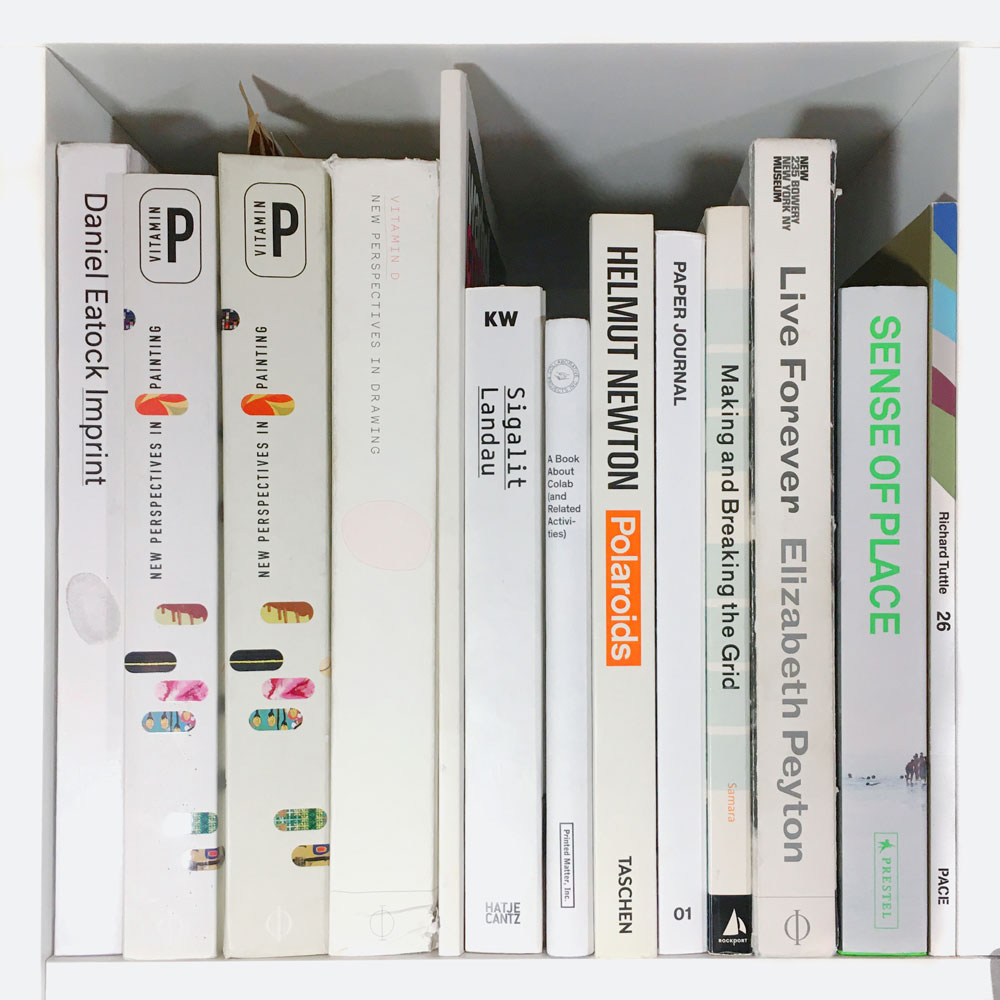

- DANIEL EATOCK IMPRINT
Daniel Eatock
Princeton Architectural Press, New York, 2008
- VITAMIN P: NEW PERSPECTIVES IN PAINTING
Barry Schwabsky
Phaidon Press, London, 2004
- (hardcover) VITAMIN P
- VITAMIN D: NEW PERSPECTIVES IN DRAWING
Jordan Kantor, Igor Zabel
Phaidon Press, London, 2005
- WARHOL: CONFECTIONS + CONFESSIONS
The Andy Warhol Museum Pittsburgh
Affirmation Arts, 2012
- SIGALIT LANDAU
Ruth Ronen
Hatje Cantz Publishers, 2008
- A BOOK ABOUT COLLAB (AND RELATED ACTIVITIES)
Printed Matter, Inc. New York, 2015
- POLAROIDS
Helmut Newton
Taschen, 2015
- PAPER JOURNAL 01
Palm Studios
Paper Jounral, 2018
- MAKING AND BREAKING THE GRID
Timothy Samara
Rockport Publishers, Massachusetts, 2005
- LIVE FOREVER
Elizabeth Peyton
Phaidon, London, 2008
- SENSE OF PLACE: EUROPEAN LANDSCAPE PHOTOGRAPHY
Liz Wells, Elizabeth Vandeweghe, Gill Paul, Karen Sullivan
Prestel, Munich, 2012
- 26
Richard Tuttle
Pace Gallery, 2016
